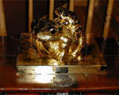
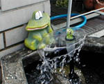
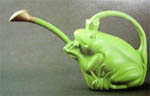
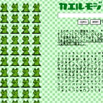
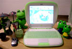

湯布院温泉がカエル化！ 【福岡発=けろ同志記者】福岡県の蛙マニアです。マニア歴は短く、半年ほどですが、出かける先で、蛙を見かけては、写真を撮っています。こないだ由布院に行った時に見つけた蛙をお送りします。
 １、湯布院「彩岳館」のロビーに置いてあった蛙の置物です。黄金に輝く蛙の親子？（カップル？）まばゆい光に包まれて、私は直視するとこが出来ませんでした。（＞ｙ＜） ぶっ！？２、湯布院「秋桜庵」の門の脇。由布院の金鱗湖の近くにある旅館の入り口にありました。旅館の前を通っていると、なんとなく視線を感じて、振り返ると、彼が私を見つめていました。 ３、由布院駅前通りの電気屋さんの店先 なぜ、この電気屋さんが蛙を飾っているのかは、分かりませんが、おそらく此処の店主もマニアなのでしょう？噴水の真ん中に、小さな蛙がいて、それを手をくわえた大きな蛙君が見つめていました。
カエル温泉路線を支持！【全国かえる奉賛会】九州を代表する高級温泉の湯布院がカエル化していたとは！黄金のペアリングカエルとは縁起がいいぞお。この旅館の温泉につかったカップルは、きっと子宝に恵まれると思うので、泊まりに行こう！カエル短歌で栄冠つかむケロりかの姫！【青森発ケロりかの姫同志記者】「かえる俳句」の指令が同志の皆様に発せられているようですが、私は短歌で勝負してみました。 この夏開催された「北のまほろば青森・全国短歌祭」で、私の作品が佳作入選を果たしたのでお知らせいたします。入選作は――
半眼（はんがん）に夜の長さを計るごと 闇に動かぬ蟇（ひき）の一匹
賞状、そして副賞として津軽塗りの銘々皿を戴きました。これからも「かえる文学」の道を精進していきたい、と思う次第であります。
カエルじょうろの姿を発見！ 【神奈川発けぐり同志記者】掲示板で話題になっているカエルじょうろがまた海老名サティ３ＦのDROPSという店に復活しているという情報を受けた私は，本日朝，自宅から片道２０キロの道をバイクで飛ばしました．が，カエルじょうろがありません．店の人に聞いたら、なんと、日曜日に売れたということらしいです．つまりはトコトコさんがメールを出した直後に売れたのでしょう。こんなに人気のあるじょうろだとは！ あまりにも悔しかったので、注文をし、ついでにカタログの写真を接写してきました。
１週間に１個は入荷するらしいです。店は『DROPS海老名店 神奈川県海老名市中央2-4-1 海老名サティ内3F』TEL 046-231-0102 FAX 046-231-5117
【全国かえる奉賛会】カエルジョウロを入手するため、情報を得たら速攻で攻撃に出るケグリ同志だが、常に売り切れてしまう超人気のカエルジョウロ！いったいどんなものなんだあ。現物みたああい。
 カエルマスゲームで文字表示！【福岡発コロスケ同志記者】JavaScriptで動くカエルモジというものを作ってみたのでお知らせです。むかし作ったカエルメッセージというスタックのWeb版。100匹のかえるさん達が文字を表示してくれます。
モローストラップ８期分譲開始！ 【ケロ天市場】けろテン市場では、モローのストラップ『第８期分譲開始』だああああ！！題して『夏の思い出コレクション』。今回、大王がケロ天のページ作った直後に、上海旅行にでかけてしまい、ケロ天市場の広報を新聞でするのが遅れたあああ。ページにたまたま辿り着いたラッキーな人は、先にゲットしているけど、まだ今からでも遅くないぞーっ！！モローストラップ作者の『弟子りょーこさん』のミニグラビア付きです。注文はお早めに！
【ケロ天市場】けろテン市場では、モローのストラップ『第８期分譲開始』だああああ！！題して『夏の思い出コレクション』。今回、大王がケロ天のページ作った直後に、上海旅行にでかけてしまい、ケロ天市場の広報を新聞でするのが遅れたあああ。ページにたまたま辿り着いたラッキーな人は、先にゲットしているけど、まだ今からでも遅くないぞーっ！！モローストラップ作者の『弟子りょーこさん』のミニグラビア付きです。注文はお早めに！
大王のカエル化デスクを大公開！ 【福岡発げこげこ大王直筆】大王は、どんな環境でカエル新聞を更新しているんですかいのう？そういうメールをよくいただくのであるが、本日は、特に大王の作業環境を公開してみよう。大王が使用しているのは、もちろん緑色のi-bookじゃ。壁紙はもちろん『居眠りカエル君』です。緑色のキーボードカバーでしょ。しかし、カエルをデスク周囲にたくさん並べるのは、趣味が悪いので、さりげなく目立たないように、ごく少なく、ケロタン人形でしょ。バリ島の傘さしカエル２つ。薬局でもらったケロチャン人形２つ。筆さしに使っているケロチャンのマグカップ。中には、ケロトラマンボールペン。
この中で気分を落ち着けて新聞の更新をしているのである。ほかのカエラー諸君は、どんな環境で、パソコンに向かっているのであろうか！教えてくれー。

八幡中央高校『童心にカエル』に感状と記念品！【福岡発げこげこ大王直筆】平成１３年９月２日号で紹介した『砂浜にカエル造型物！』の作品を作った八幡中央高校芸術コース「童心にカエル」に対して、げこげこ大王７世と、全国カエル奉賛会は、『感状』を発行し、製作にあたった指導教官と生徒１５人全員に対して記念品を贈呈することに決定した！熱烈かえる新聞読者に記念品！【全国かえる奉賛会】通算１７７７７７人目に当選した、北九州市の川崎さまに、かえるグッズ景品を発送中なり！
投稿採用者に武功カエル徽章を授与！ |
||||||||||||||||||||||||||||||
かえる古新聞過去に取り上げた記事を見出し付きで一覧したい人は、ここをクリック◆創刊号を見る◆先週号を見る◆話題の号を見る◆かえる新聞の昔を読む◆COOL NET FROG RANKING !
|
私も入っています。。全国かえる奉賛会
大王様に会うには、このバナーをクリック。ずっと奥に写真館があるぞ。全国かえる奉賛会に入会するには、自分のホームページのどこかに、下の部分を追加するとバナーがリンク付きで表示されるぞ。どんどん入会しましょー |


|